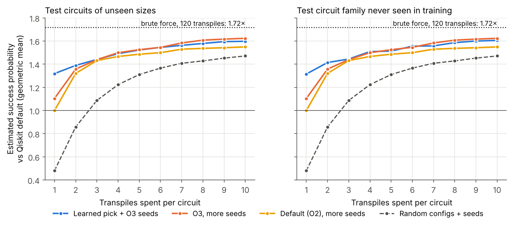
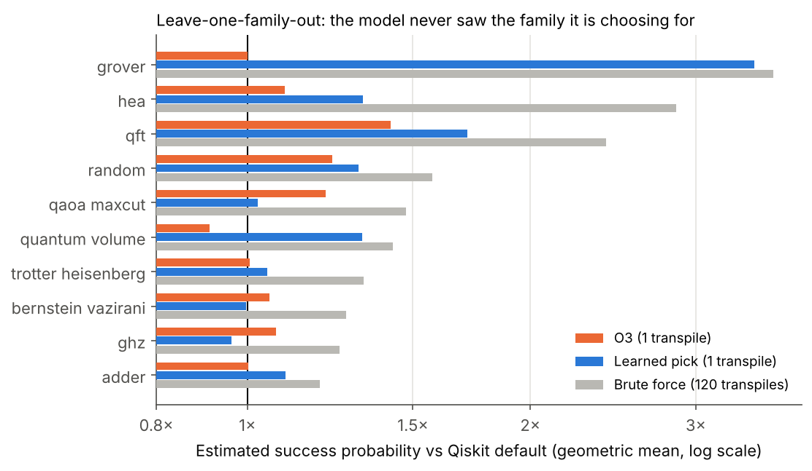
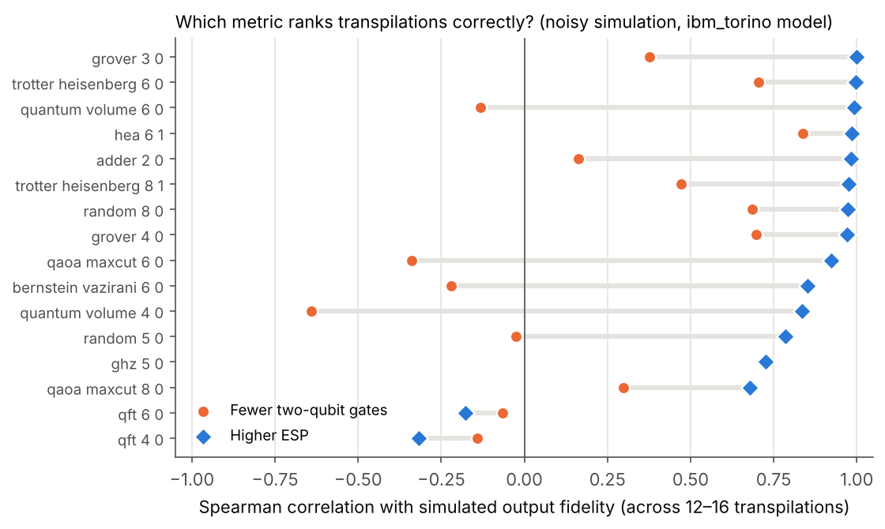
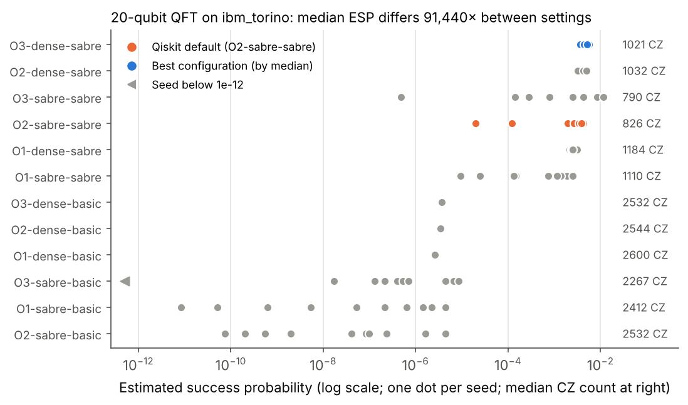

Learned Transpiler Tuning: Picking Qiskit Settings per Circuit for IBM Heron
AI for quantum compilation · Qiskit 2.6.2, ibm_torino calibration, scikit-learn · 144 circuits, 10 families, 17,280 transpiles
The same circuit compiled with different Qiskit settings can differ in expected fidelity by orders of magnitude. I measured how much the settings matter on an IBM Heron device model, checked which metric actually predicts output quality, and trained a model that picks good settings without trying them all. Then I tested it honestly against the strongest cheap alternative.
1.32×ESP vs Qiskit default from the learned pick, with one compile (O3: 1.10×)
0.95 vs 0.16how well ESP vs fewest CZ gates ranks compiles (Spearman, noisy simulation)
3 / 144circuits where Qiskit's default setting was the best one
91,440×median ESP spread between settings for one 20-qubit QFT
Scope: all compiles target IBM's ibm_torino calibration snapshot (Heron, 133 qubits), with faulty components removed as IBM does for real backends. Results are on this device model, not physical hardware. The score is validated with full noisy simulation.
Demo
One 20-qubit QFT, 12 settings × 10 seeds. The best setting beats the default by 1.9× while using 24% more CZ gates.Compile-budget race, scored on a circuit family the model never saw in training.
Key findings
Settings matter enormously. For a 20-qubit QFT, median estimated success probability (ESP) differs 91,440× across 12 settings. The best is 1.9× better than Qiskit's default.
Fewer gates ≠ better circuit. That best compile uses 24% more CZ gates than the default, but places the circuit on a low-error region of the chip. In noisy simulation, ESP ranked compiles correctly (median Spearman 0.95) where gate count did not (0.16).
The default is rarely best. It won for 3 of 144 circuits; dense layout won for 76%.
The learned pick wins at tight budgets. With one compile it reached 1.32× the default's ESP, against 1.10× for optimization level 3, even on circuit families never seen in training.
Seed search catches up. By 3 compiles, re-running level 3 with new seeds matches it (1.44× each). At 10 it's slightly ahead (1.62× vs 1.60×). Brute force over all 120 compiles reaches 1.72×.
Results

Best ESP found after k compiles, relative to Qiskit's default. The learned pick leads at 1–2 compiles; level-3 seed search catches up by 3.
One-compile budget, geometric-mean ESP vs Qiskit default
Strategy
Compiles
Unseen sizes
Unseen family
Qiskit default (O2)
1
1.00×
1.00×
optimization_level=3
1
1.10×
1.10×
Learned pick
1
1.32×
1.32×
O3, best of 5 seeds
5
1.53×
1.53×
Brute force
120
1.72×
1.72×

Leave-one-family-out. Biggest wins on dense-interaction circuits (Grover 3.5×, QFT 1.7×, quantum volume 1.3×). Neutral to slightly worse on chain-like GHZ and Bernstein–Vazirani, where the default layout is already near-perfect.

Noisy-simulation check, 16 circuits × 12–16 compiles each. ESP ranks compiles better than gate count on 13 of 16. The small QFTs produce near-uniform outputs that no metric can rank.

Every compile of one 20-qubit QFT, one dot per seed, with the median CZ count at right.
Method
Circuits: GHZ, QFT, Bernstein–Vazirani, QAOA MaxCut, Grover, ripple-carry adders, quantum volume, hardware-efficient ansätze, Trotterized Heisenberg models and random circuits, from 3 to 48 qubits.
Settings: optimization level {1, 2, 3} × layout {sabre, dense} × routing {sabre, basic} × 10 seeds. Trivial layout fails on the degraded coupling map, and lookahead routing was too slow (over 9 minutes on 48 qubits).
Score: log₁₀ ESP = Σ log₁₀(1 − error) over all gates and measurements, from the device calibration.
Model: gradient-boosted trees on 21 device-independent features (gate mix, depth, interaction-graph degree, cycles, diameter, clustering) plus the setting, predicting the gain over default.